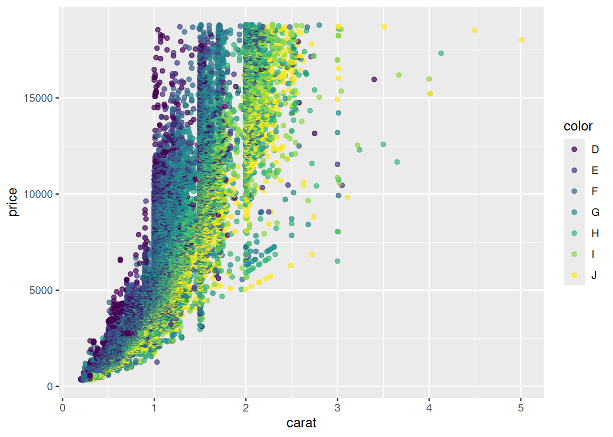
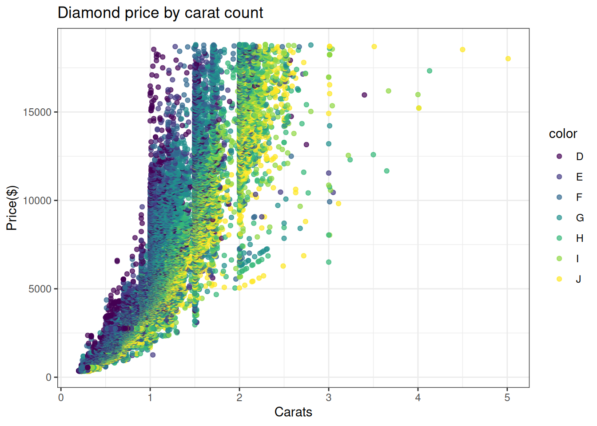
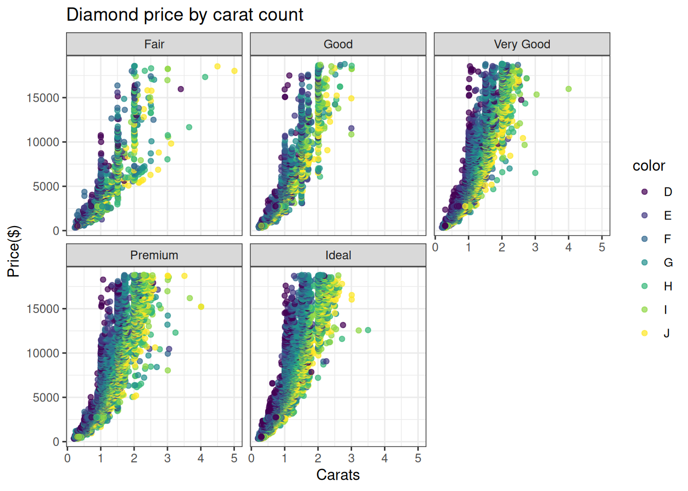

DATASCI 306 Lab1
Your Name
1 Git
Git is going to be an important part of this course, and possibly your future! While it may be intimidating at first, your effort will be well worth it in the long run. Git was already discussed in some detail in the first lecture, so we won’t cover it much now. Instead, we will review some of the basic ideas and can provide help where needed.
1.1 Resources
- Beginning Git and GitHub by Mariot Tsitoara.
- Pro Git, free textbook by the maintainer of the Git homepage.
- Your GSIs!
1.2 Basic Concepts
- repository: A representation of the current state of a collection of files, along with its entire history of modifications.
- commit (noun): A recorded change made to the repository.
- branch: While we won’t do a lot with branches in this course, they are a very useful way of collaborating. Branches are essentially additional versions of the repository that you can create, name, delete, and merge into the main (or master) branch of the repository.
1.3 Common Git commands
Git is a powerful version control system that allows us to share and edit code, as well as keep track of previous versions of code.
To get a “local” copy of a repository, you can use:
git clone <repository>For example, if you want to get the course repository on your personal computer, you may run:
git clone https://github.com/jravi123/datasci306-fall24After you’ve copied a remote repository to your computer (cloned it), updates might be made to the ‘remote’ version. These changes could be made by you or someone else, such as me adding new lectures.
To update your local copy with these changes, run the following command:
git pullYou can also check the status of the local repository by running:
git statusThis is a very useful command as it provides you with a basic summary about the status of a repository, for example, if any local changes have been made.
Other useful git functions include:
git pullgit add <filename>git commit -m "Commit Message"git push
1.4 Let us get posit cloud with our class repo
- Navigate to https://posit.cloud/ - sign in with umich ID.
- On the left tab
spacesselectYour workspace. Then from the rightNew Projectdropdown button, selectNew Project from Git Repository. - Put
https://github.com/jravi123/datasci306-fall24as the value for the text input box forURL of your New Repository. - Press
OKto complete the remote repository to your workspace.
2 Introduction to R
2.1 R Packages
- Use the install.packages(“
”) command to install packages in R - To load a package (already installed) use the
library(
) command
# run the first two lines if you have not installed the tidyverse and learnr packages
# install.packages("tidyverse")
# install.packages("learnr")
library(learnr)
library(tidyverse) ## ── Attaching core tidyverse packages ──────────────────────── tidyverse 2.0.0 ──
## ✔ dplyr 1.1.4 ✔ readr 2.1.5
## ✔ forcats 1.0.0 ✔ stringr 1.5.1
## ✔ ggplot2 3.5.1 ✔ tibble 3.2.1
## ✔ lubridate 1.9.3 ✔ tidyr 1.3.1
## ✔ purrr 1.0.2
## ── Conflicts ────────────────────────────────────────── tidyverse_conflicts() ──
## ✖ dplyr::filter() masks stats::filter()
## ✖ dplyr::lag() masks stats::lag()
## ℹ Use the conflicted package (<http://conflicted.r-lib.org/>) to force all conflicts to become errors- You can load lots of packages together as library(
, , )
library(learnr, tidyverse)2.2 Assignment and Operations
- The standard form of an assignment is
<- - The form
= also works, but R’s community prefers <- notation - A name can contain letters, numbers, underscores, and dots but should start with a letter
#variable assignments
u <- 3 ## this is considered standard
v = -2 ## this is accepted
x <- 6
y <- 'hello world' ## 'hello world' is a string
y <- "hello world" ## also double quotes
z <- TRUE ## boolean variable (also T/F can be used for TRUE/FALSE but not True/False)
#Few examples of operation
u + x## [1] 9x/v## [1] -3Exercise 1:
- add x and y
- add x and z
What do you observe?
x <- 6
y <- "hello world" ## also double quotes
z <- TRUE
# your code here2.3 Coding Style
Good coding style is like correct punctuation: you can manage without it, but it sure makes things easier to read.
(picked this statement from: https://style.tidyverse.org/index.html)
Please try to follow the recommended coding style right from get go!
2.4 Function Calls
We can use ‘?’ to look up documentation of functions
?sqrt
sqrt(5)log(100) # natural log## [1] 4.60517log(100, base = 10) # log with base 10## [1] 2round(3.1415926535, 3)## [1] 3.142abs(-4)## [1] 4You can also write your own functions:
# writing your own functions
pow <- function(base, exponent) {
# this is a trivial example
return (base^exponent)
}
dog <- function() {
print("woof") # does not need to return anything
}pow(2,3); dog()## [1] 8## [1] "woof"Exercise 2: write a function to print the volume of a cylinder of radius \(r\) cm, and height \(h\) cm. \(h\) and \(r\) are the inputs of the function. Also print the volume of a cylinder with \(r=3\) and \(h=5\)
Hint: volume=\(\pi r^2 h\)
## your code here.2.5 Vectors and Lists
Vectors (a.k.a atomic vectors) and Lists are fundamental building blocks in R.
- Vector is the basic data structure in R. A vector contain elements of a single data type (numeric, character, logical, etc.)
- Lists: elements of Lists can be another vector or any other type - i.e., can be heterogeneous
int_vec <- c(2L, 3L, 5L, 8L) # Make a vector containing integers
fp_vec <- c(-0.3, 16.7, 58.9) # Make a vector containing floating point numbers
string_vec <- c("apple", "banana", "cherry") # Make a vector containing strings
logical_vec <- c(TRUE, FALSE, TRUE) # Make a vector containing logical values
# Describe the structures of the vectors
str(int_vec)## int [1:4] 2 3 5 8str(fp_vec)## num [1:3] -0.3 16.7 58.9str(string_vec)## chr [1:3] "apple" "banana" "cherry"str(logical_vec)## logi [1:3] TRUE FALSE TRUEWe can also make a list of vectors of different types:
my_list <- list(int_vec, fp_vec, string_vec, logical_vec) # Make a list
str(my_list) # Describe the structure of the list## List of 4
## $ : int [1:4] 2 3 5 8
## $ : num [1:3] -0.3 16.7 58.9
## $ : chr [1:3] "apple" "banana" "cherry"
## $ : logi [1:3] TRUE FALSE TRUEWe can name the components of a vector or a list.
# Components can be named
named_string_vec <- c(fruit1 = "apple", fruit2 = "banana", fruit3 = "cherry")
named_list <- list(the_int_vec = int_vec, the_string_vec = named_string_vec)named_string_vec## fruit1 fruit2 fruit3
## "apple" "banana" "cherry"named_list## $the_int_vec
## [1] 2 3 5 8
##
## $the_string_vec
## fruit1 fruit2 fruit3
## "apple" "banana" "cherry"2.5.1 Subsetting
- Subsetting refers to extracting parts of an object
- Several ways to subset a vector
- [] usually used on vectors
- Can extract multiple components
- [[]] usually used on lists
- Can only extract one component
- $ used on lists
- Can only extract one component, by name
- [] usually used on vectors
string_vec[2] # Extract second component## [1] "banana"string_vec[c(2, 3)] # Extract second and third components - note the use of c()!## [1] "banana" "cherry"c(2, 3)## [1] 2 3string_vec[-1] # Extract all but the first component## [1] "banana" "cherry"string_vec[-c(1, 3)] # Extract all but the first and third components## [1] "banana"string_vec[4]## [1] NAstring_vec[-4]## [1] "apple" "banana" "cherry"my_list[[1]] # Extract first component## [1] 2 3 5 8named_list$the_int_vec # Extract component named "the_int_vec"## [1] 2 3 5 8str(my_list[1]) # if you use [] on a list, the result is a sub-list## List of 1
## $ : int [1:4] 2 3 5 82.6 Logical Operators
- Negation:
a = TRUE
b = c(TRUE, FALSE)
!a ## use '!' for negation (not) in R## [1] FALSE!b## [1] FALSE TRUE- Comparison:
x = c(1, 3, 5)
y = c(2, 3, 4)
x == y ## element-wise equality## [1] FALSE TRUE FALSEx != y ## what does this do?## [1] TRUE FALSE TRUEx > y ## greater than## [1] FALSE FALSE TRUEx >= y ## greater than or equal to## [1] FALSE TRUE TRUE- ‘and’ and ‘or’
(5 > 2) | (1 == 0) ## [1] TRUE(5 > 2) & (1 == 0) ## [1] FALSEc = c(TRUE, TRUE, FALSE)
d = c(TRUE, FALSE, FALSE)
c & d## [1] TRUE FALSE FALSEc | d## [1] TRUE TRUE FALSEall(c(TRUE, TRUE, TRUE))## [1] TRUEall(c(TRUE, TRUE, FALSE))## [1] FALSEany(c(FALSE, FALSE, FALSE))## [1] FALSEany(c(FALSE, FALSE, TRUE))## [1] TRUEUseful: More about base R can be found here: base R cheat sheet
2.7 Working with Data
2.7.1 Creating a Tibble
Tibble construction syntax is as follows:
dataframe = tibble(
col_name1 = c(some_vector),
col_name2 = c(some other vector)
)We can construct a tibble:
# (These are characters from Avatar: the Last Airbender)
dat = tibble(
name = c('Aang', 'Katara', 'Sokka', 'Toph', 'Zuko'),
age = c(112, 14, 15, 12, 16),
is_bender = c(T, T, F, T, T),
nationality = c("Air", "Water", "Water", "Earth", "Fire"),
grade = c(89, 94, 96, 86, 82),
extra_credit = rep(1, 5)
)
dat## # A tibble: 5 × 6
## name age is_bender nationality grade extra_credit
## <chr> <dbl> <lgl> <chr> <dbl> <dbl>
## 1 Aang 112 TRUE Air 89 1
## 2 Katara 14 TRUE Water 94 1
## 3 Sokka 15 FALSE Water 96 1
## 4 Toph 12 TRUE Earth 86 1
## 5 Zuko 16 TRUE Fire 82 1We can extract elements from a tibble:
dat[2,] # accessing a row## # A tibble: 1 × 6
## name age is_bender nationality grade extra_credit
## <chr> <dbl> <lgl> <chr> <dbl> <dbl>
## 1 Katara 14 TRUE Water 94 1dat[4, 4] #accessing a single value## # A tibble: 1 × 1
## nationality
## <chr>
## 1 Earth# syntax is: [row, column]
dat[, 5]## # A tibble: 5 × 1
## grade
## <dbl>
## 1 89
## 2 94
## 3 96
## 4 86
## 5 82dat[2:3, c(1, 3, 4)]## # A tibble: 2 × 3
## name is_bender nationality
## <chr> <lgl> <chr>
## 1 Katara TRUE Water
## 2 Sokka FALSE WaterWe can also use $ to access a single column:
dat$name # accessing a single column## [1] "Aang" "Katara" "Sokka" "Toph" "Zuko"dat$grade## [1] 89 94 96 86 82We can also create a new column:
dat$final_score = dat$grade + dat$extra_credit
print(dat)## # A tibble: 5 × 7
## name age is_bender nationality grade extra_credit final_score
## <chr> <dbl> <lgl> <chr> <dbl> <dbl> <dbl>
## 1 Aang 112 TRUE Air 89 1 90
## 2 Katara 14 TRUE Water 94 1 95
## 3 Sokka 15 FALSE Water 96 1 97
## 4 Toph 12 TRUE Earth 86 1 87
## 5 Zuko 16 TRUE Fire 82 1 83# a dataframe (tibble) is a list of vectors (of the same length)Logical operations on tibbles:
subset(dat, age < 100) # subset based on logical condition## # A tibble: 4 × 7
## name age is_bender nationality grade extra_credit final_score
## <chr> <dbl> <lgl> <chr> <dbl> <dbl> <dbl>
## 1 Katara 14 TRUE Water 94 1 95
## 2 Sokka 15 FALSE Water 96 1 97
## 3 Toph 12 TRUE Earth 86 1 87
## 4 Zuko 16 TRUE Fire 82 1 83Exercise 3: Take a subset of Avatar characters who are benders and
have a raw grade greater than 90%. Save this to a variable called
dat2.
dat = tibble(
name = c('Aang', 'Katara', 'Sokka', 'Toph', 'Zuko'),
age = c(112, 14, 15, 12, 16),
is_bender = c(T, T, F, T, T),
nationality = c("Air", "Water", "Water", "Earth", "Fire"),
grade = c(89, 94, 96, 86, 82),
extra_credit = rep(1, 5)
)
# Your code here2.7.2 A Large Dataset
diamonds is a dataset in package ggplot2:
head(diamonds)## # A tibble: 6 × 10
## carat cut color clarity depth table price x y z
## <dbl> <ord> <ord> <ord> <dbl> <dbl> <int> <dbl> <dbl> <dbl>
## 1 0.23 Ideal E SI2 61.5 55 326 3.95 3.98 2.43
## 2 0.21 Premium E SI1 59.8 61 326 3.89 3.84 2.31
## 3 0.23 Good E VS1 56.9 65 327 4.05 4.07 2.31
## 4 0.29 Premium I VS2 62.4 58 334 4.2 4.23 2.63
## 5 0.31 Good J SI2 63.3 58 335 4.34 4.35 2.75
## 6 0.24 Very Good J VVS2 62.8 57 336 3.94 3.96 2.48dim(diamonds)## [1] 53940 10summary(diamonds)## carat cut color clarity depth
## Min. :0.2000 Fair : 1610 D: 6775 SI1 :13065 Min. :43.00
## 1st Qu.:0.4000 Good : 4906 E: 9797 VS2 :12258 1st Qu.:61.00
## Median :0.7000 Very Good:12082 F: 9542 SI2 : 9194 Median :61.80
## Mean :0.7979 Premium :13791 G:11292 VS1 : 8171 Mean :61.75
## 3rd Qu.:1.0400 Ideal :21551 H: 8304 VVS2 : 5066 3rd Qu.:62.50
## Max. :5.0100 I: 5422 VVS1 : 3655 Max. :79.00
## J: 2808 (Other): 2531
## table price x y
## Min. :43.00 Min. : 326 Min. : 0.000 Min. : 0.000
## 1st Qu.:56.00 1st Qu.: 950 1st Qu.: 4.710 1st Qu.: 4.720
## Median :57.00 Median : 2401 Median : 5.700 Median : 5.710
## Mean :57.46 Mean : 3933 Mean : 5.731 Mean : 5.735
## 3rd Qu.:59.00 3rd Qu.: 5324 3rd Qu.: 6.540 3rd Qu.: 6.540
## Max. :95.00 Max. :18823 Max. :10.740 Max. :58.900
##
## z
## Min. : 0.000
## 1st Qu.: 2.910
## Median : 3.530
## Mean : 3.539
## 3rd Qu.: 4.040
## Max. :31.800
## You can use ?diamonds to check the meaning of each
variables.
2.8 Plotting with ggplot2
Every ggplot2 plot has three key components:
data
A set of aesthetic mappings between variables in the data and visual properties, and
At least one layer which describes how to render each observation. Layers are usually created with a geom function.
(Source: https://ggplot2-book.org/getting-started.html)
ggplot is a layer-based function. We first create a coordinate system that you can add layers to using the function ggplot(data = …). This will create an empty graph.
ggplot(data = diamonds)
We then add the data points onto this empty graph using the function
geom_point(). The argument
mapping = aes(x = carat, y = price) tells R what variables
(columns in diamonds) we want to plot on each axis.
ggplot(data = diamonds) +
geom_point(mapping = aes(x = carat, y = price))
It would be helpful to also visualize the color of diamonds in the scatter plot. We can study this more in depth by making a third variable and map to some aesthetic (i.e., visual property) of the points. Some examples are color, shape, size, and transparency.
ggplot(data = diamonds) +
# carat on x-axis, price on y-axis, color represents different colors of the diamonds
# alpha is the transparency of the points
geom_point(mapping = aes(x = carat, y = price, color = color), alpha = 0.7)
Then we can add axes labels and title
ggplot(data = diamonds) +
geom_point(mapping = aes(x = carat, y = price, color = color), alpha = 0.7) +
# specify axis labels
labs(x = 'Carats', y = 'Price($)', title = 'Diamond price by carat count') You can get a better background by changing the theme. You can find more information about ggplot here.
ggplot(data = diamonds) +
geom_point(mapping = aes(x = carat, y = price, color = color), alpha=0.7) +
# specify axis labels
labs(x = 'Carats', y = 'Price($)') +
# another way of specifying title
ggtitle('Diamond price by carat count') +
theme_bw()
You can also create subplots for different cut types by using
facet_wrap():
ggplot(data = diamonds) +
geom_point(mapping = aes(x = carat, y = price, color = color), alpha = 0.7) +
facet_wrap(~cut, ncol = 3) +
labs(x = 'Carats', y = 'Price($)') +
ggtitle('Diamond price by carat count') +
theme_bw()
Exercise 4: Recreate the box-plot below
hint you need to use geom_boxplot

# your code here